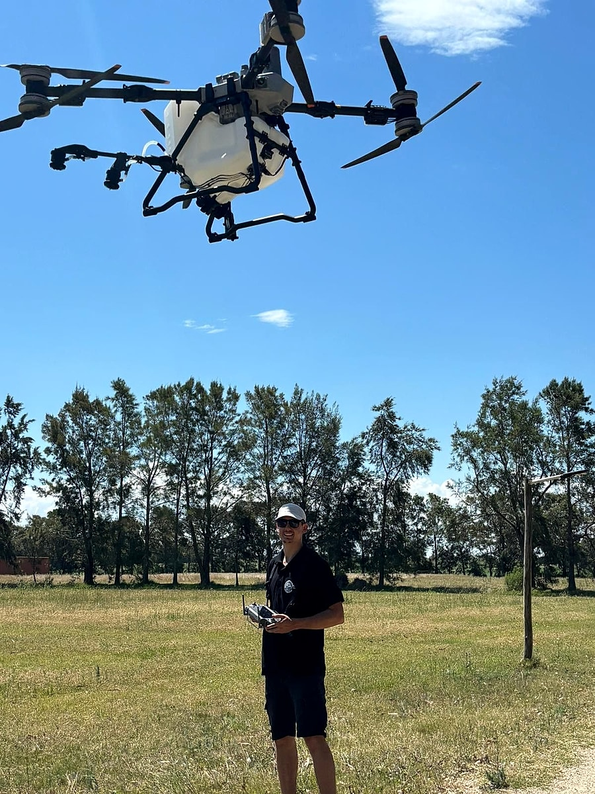
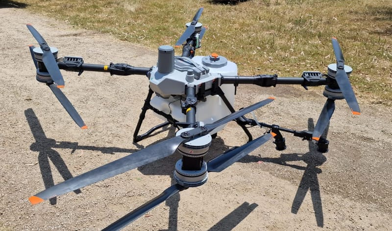
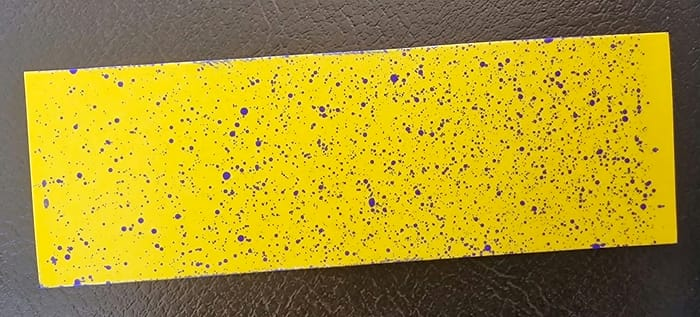
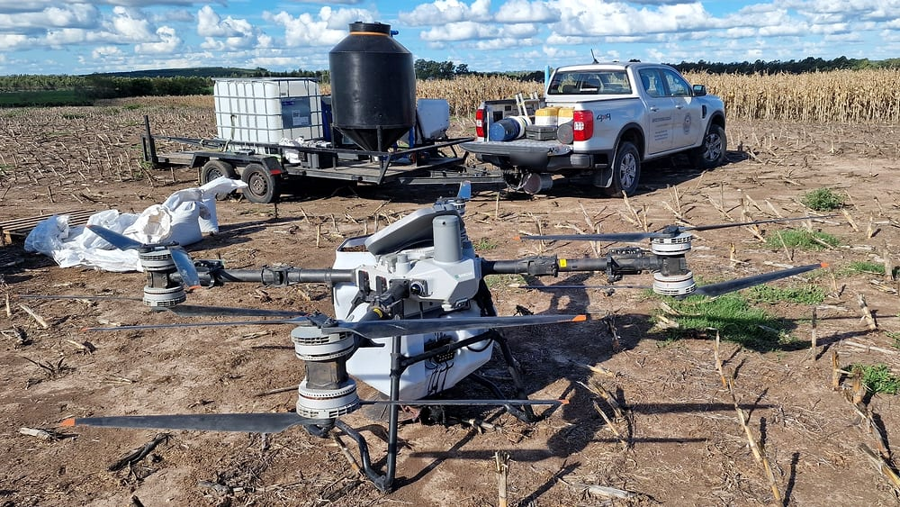
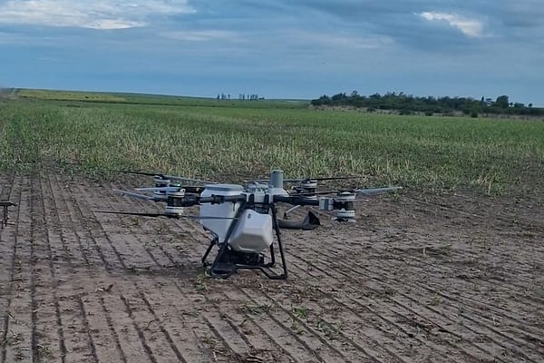
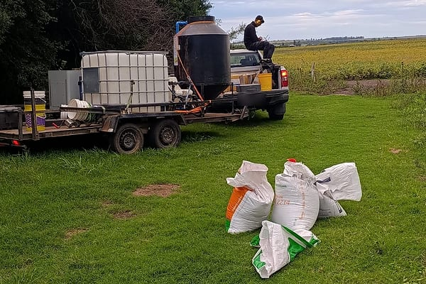
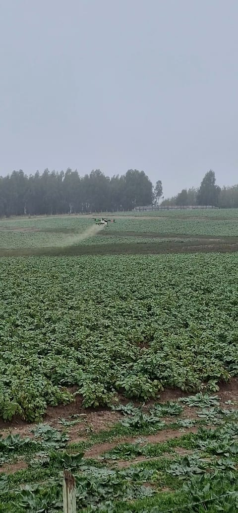
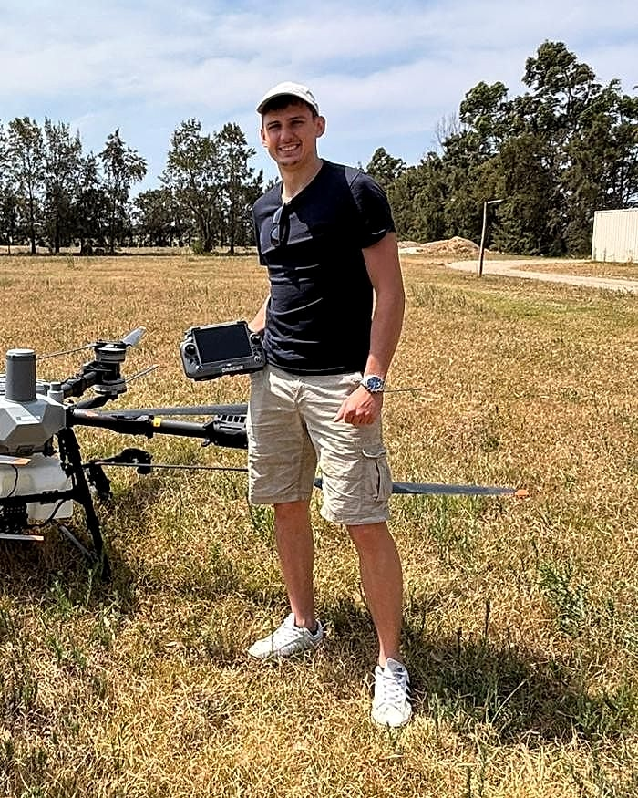
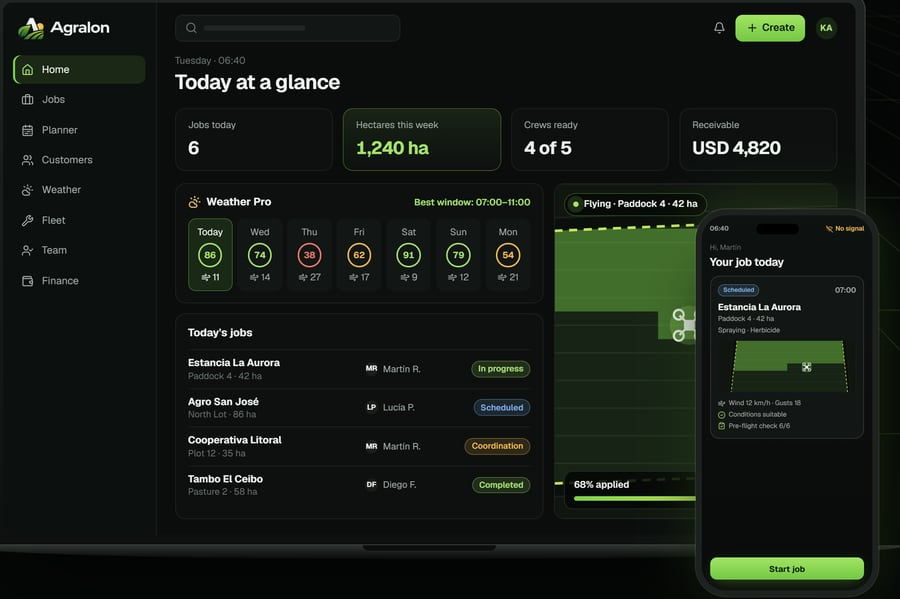

Spraying
Application of crop protection products from the air, with no need to drive ground machinery through the crop.
Agricultural drone services · Uruguay
Agricultural services with the DJI Agras T100: spraying, seeding, fertilizing and work in hard-to-reach areas.

Why aerial application
Heavy machinery is not the best answer to every situation. A drone applies without driving wheels through the crop and opens up options on fields that are hard to access or where the soil cannot carry equipment.
Aerial application without machinery driving over the crop.
An alternative when soil conditions make it hard to bring in heavy equipment.
Each job is planned and carried out according to the crop, the product and the field conditions.
Technology designed to cover large areas with an organized, efficient operation.
Services
Application of crop protection products from the air, with no need to drive ground machinery through the crop.
Aerial distribution of seed, including cover crops and other applications compatible with the system.
Aerial application of solid fertilizers where speed or ground conditions make an aerial solution especially useful.
Applications in low-lying areas, patches with poor ground conditions and other places where conventional machinery struggles to get in.

Technology
An agricultural platform built for professional operations.
We work with a large-format machine built for real agricultural work: spraying and spreading seed and solid fertilizer, with environment sensing and planned flight over the field.
Millimeter-wave radar, LiDAR and a vision system for obstacle detection. Manufacturer data (DJI). Each job is configured according to the crop, the product and the field conditions.

Application check
Yellow paper cards that turn blue wherever droplets land. Placed in the field, they show how the spray arrived and let us check coverage with a visible result.
Applications
Not every application suits every crop or product. Feasibility is assessed case by case before a job is scheduled.
Work in the field
Our own footage of Kunz Agrotech operations with the DJI Agras T100. No staged scenes and no stock images.




How we work
Crop, area, location and type of work.
We review the key details of the job and agree on the conditions.
We set the date and the operation based on suitable conditions for the job.
We run the operation with the right equipment and planning.

About us
Kunz Agrotech is a specialized agricultural drone service based in the department of San José, operating project by project in different parts of Uruguay.
The company was founded by Stanley Kunz, who is also directly involved in running the drone operations.
Our way of working combines modern technology, planning and a quality standard inspired by our German roots, adapted to the real needs of Uruguayan farming.
Coverage
Our operating base is in the department of San José. We assess jobs in other parts of the country based on area, location and type of service.
Quotes
Every job is different. To prepare a quote we only need a few details:
Technology we also build
We work in the field, and we also build technology for the people who work in it.
Agralon is our platform for agricultural drone service companies: customers and fields, jobs, planning, fleet, team, reports and invoicing in one system. It grew out of Kunz Agrotech's experience in the field.
From the customer's request to a scheduled job, with pilot and machine assigned.
Every field with its boundary, its hectares and its application history.
Wind, gusts and rain by the hour, plus a pilot app that works without signal.
Drone and battery maintenance, application reports, quotes and invoices as PDFs.

Frequently asked questions
Any other questions? Message us on WhatsApp and we will get back to you directly.
We are based in the department of San José. We assess jobs in other departments based on area, location and type of service.
Field location, approximate area, crop and type of application. With that information we can give you a first answer.
No. Kunz Agrotech also offers other services compatible with the agricultural platform, including broadcast seeding and certain fertilizer applications.
Aerial application can be an alternative in many situations with access problems or difficult soil conditions. Feasibility is assessed for each job.
Directly on WhatsApp at +598 92 800 358 or through the contact form a little further down.
Contact
Tell us what you need and we will work out the best way to do it.
Request a quote on WhatsAppStep 3 of 3
We opened WhatsApp with your request already written. Review it and tap Send in the chat. It only reaches us once you send it.
We opened your email app with your request already written. Review it and send it from there. It only reaches us once you send it.
We will get back to you shortly.